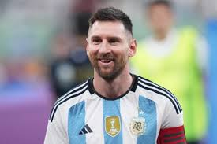
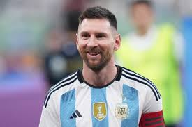

Diego Armando Maradona

Palmares
Mundial Sub 20 Japón 1979, Metropolitano 1981, Copa del Rey 1982-1983, Copa de la Liga 1983, Supercopa de España 1983, Mundial México 1986, Serie A 1986-1987, Copa Italia 1986-1987, Copa de la UEFA 1988-1989, Serie A 1989-1990, Supercopa de Italia 1990, Copa Artemio Franchi 1993
Distinciones Individuales
Máximo goleador del Campeonato Metropolitano Argentino: 1978, 1979 y 1980, Máximo goleador del Campeonato Nacional Argentina: 1979, 1980, Mejor jugador del Mundial Sub 20 de Japón: 1979, Olimpia de Oro al Mejor Deportista Argentino del CPD: 1979, 1986, Olimpia de plata al Futbolista Argentino del Año CPD: 1979, 1980, 1981 y 1986, Balón de Oro al Mejor Futbolista del Año de la CEPA: 1979, 1980 y 1981, Mejor Futbolista de América del diario El Mundo: 1979, 1980, 1986, 1989, 1990 y 1992, Diploma al Mérito Konex: 1980 y 1990, Trofeo Grandulla al Mejor Futbolista del Año: 1981, Nombrado Embajador de la UNICEF: 1985, Balón de Oro del Mundial de México de la FIFA: 1986, Segundo Goleador del Mundial de México: 1986, Pluma de Oro al Mejor Deportista de Europa: 1986, Once de Oro al Mejor Futbolista del Mundo, de la revista Onze: 1986 y 1987, Siete Magníficos del Deporte, del Geron Sportivo: 1986, Jugador del Año, del World Soccer Magazine: 1986, Ciudadano Ilustre de la Ciudad de Buenos Aires: 1986, Máximo goleador de la Serie A italiana: 1987, Máximo goleador de la Copa Italia: 1988, Balón de Bronce del Mundial de Italia: 1990, Embajador Deportivo de la República Argentina: 1990, Premio Konex de Brillante: 1990, Premio Konex de Platino: 1990, Mejor Futbolista de Todos los Tiempos de la AFA: 1993, Maestro Inspirador de Sueños de la Universidad de Oxford: 1995, Balón de Oro Honorífico, de France Football: 1995, Segundo Mejor Jugador del Mundo de Todos los Tiempos, según los ganadores del Balón de Oro de France Football: 1999, Olimpia de Platino al Deportista Argentino del siglo XX, del CPD: 1999, Deportista del Siglo, del diario Clarín: 1999, Premio FIFA Internet al Mejor Jugador de Todos los Tiempos: 2000, El Mejor Gol de la Historia, según la FIFA: 2002, Mejores Deportistas Latinoamericanos del Siglo XX, de Prensa Latina: 2003, FIFA 100: 2004, Premio Domingo Faustino Sarmiento, del Senado de la Nación Argentina: 2005, Deportista Meritorio y Vecino Ilustre del Partido de Ezeiza: 2007, Olimpia del Bicentenario al fútbol: 2010, Mejor futbolista en la historia de las Copas del Mundo, del The Times: 2010, Mejor Atleta de Todos los Tiempos, del Corriere dello Sport: 2012, Mejor Futbolista de la Historia, de FourFourTwo: 2017, Once histórico de la Copa América: 2019.


 
